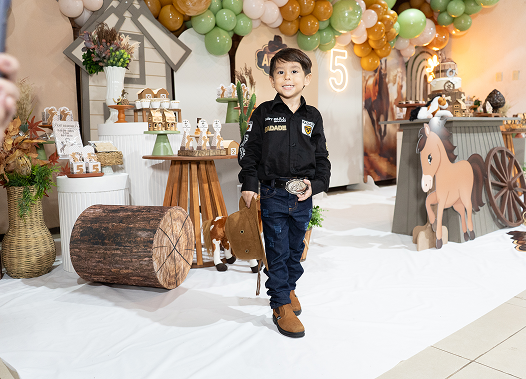
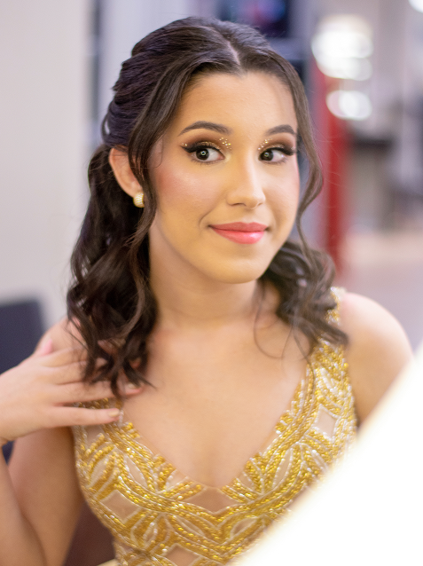
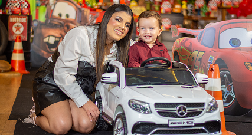
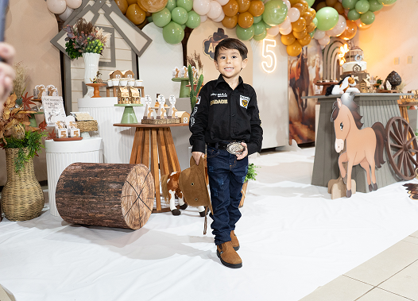
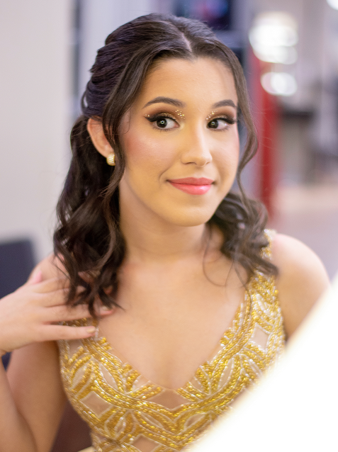
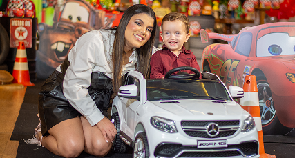
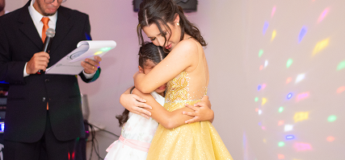
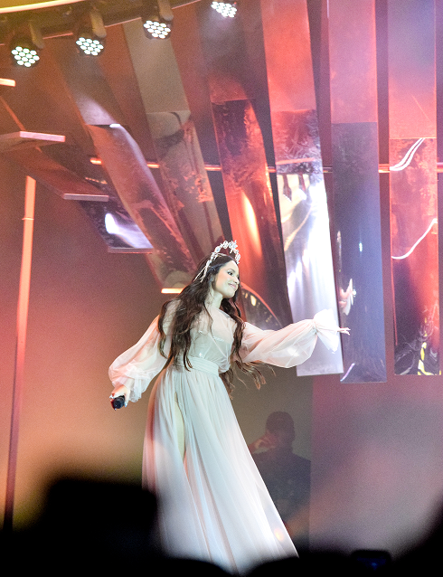
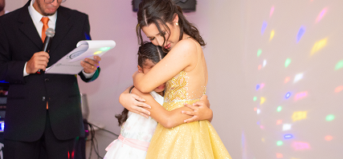
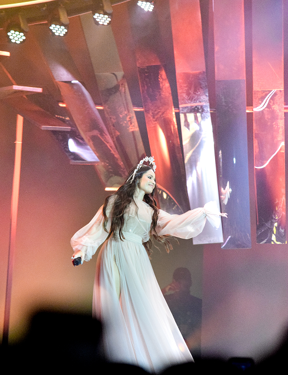

Sobre mim
Me chamo Erick Rodrigues e sou Fotógrafo e Filmmaker em João Pessoa.
Minha jornada na fotografia começou de forma simples e apaixonada, como uma maneira de expressar os sentimentos mais puros e felizes por meio de imagens.
O que inicialmente era apenas um hobby, logo se transformou em uma paixão que me impulsionou a buscar mais. Fiz cursos especializados, viajei para explorar novos lugares e desafiei a mim mesmo em diversos cenários.
Foi nesse processo que adquiri maturidade e a certeza de que minha missão seria eternizar momentos únicos e especiais.
A busca por sempre dar o meu melhor me motivou a evoluir cada vez mais, não apenas como um amante da fotografia, mas também como um profissional.
E esse sonho ganhou ainda mais força graças à minha esposa, Larissa Lima.
Em 2013, juntos, demos vida à marca Erick Films, com a missão de oferecer um serviço exclusivo, focado em capturar não apenas imagens, mas também as emoções, histórias e essência de cada momento.

Ao longo dessa trajetória, adotamos valores que norteiam cada trabalho realizado:
Exclusividade
Cada cliente é único e merece um olhar especial para contar sua história.

Diferencial
Buscamos sempre inovar e superar expectativas, seja na fotografia, no vídeo ou no atendimento.

Excelência
Nos comprometemos com a qualidade em cada detalhe, garantindo a entrega de memórias atemporais.

Prêmio "Cidade do Meu Afeto"
No ano de 2019 participei do Concurso de Fotografia João Pessoa - “Cidade do meu afeto”, o qual foi lançado pela Prefeitura de João Pessoa, juntamente com a UNESCO, e tive meu trabalho artístico reconhecido e contemplado!
A foto foi registrada na Praia do Cabo Branco, onde minha intenção foi expor sentimentos e emoções em uma só imagem.
É claro observar várias expressões, dentre elas: banhistas, pessoas se bronzeando, crianças brincando na areia, outras conversando, e por aí vai... Eu depositei uma confiança muito grande nesta imagem, e, sem dúvidas, isto chamou atenção daqueles que avaliaram.
Através disto, também participei de uma matéria especial na TV Arapuã, a qual homenageou os 434 anos da capital Paraibana.
Além da minha, outras fotos foram expostas e ficaram disponíveis no Hotel Globo.
É muito bacana saber que João Pessoa está bem representada pot fotógrafos!
 





 



Hoje, somos reconhecidos por nosso trabalho em fotografia e filmmaking, seja para aniversários, eventos ou projetos autorais.
É um privilégio participar de momentos tão importantes na vida das pessoas, imortalizando histórias que poderão ser revividas a cada olhar.
Convido você a explorar essa jornada comigo e descobrir como podemos transformar o seu momento especial em algo inesquecível.
Vamos criar juntos memórias que durarão para sempre!
Erick Films
Desde 2013